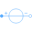
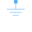
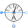
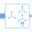
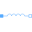
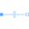
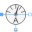
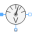

UnsymmetricalLoadUnsymmetrical three-phase load |
|
Diagram
{kind=link}
Information
This information is part of the Modelica Standard Library maintained by the Modelica Association.
This example shows an unsymmetrical load, in the upper with neutral connection (the single-phase current sensor measures the neutral current) and in the lower without neutral connection (the single-phase voltage sensor measures the neutral displacement).
Outputs (8)
| i1_d |
Default Value: symmetricalComponents_1.abs_y[1] Type: Current (A) Description: With neutral, direct component |
|---|---|
| i1_i |
Default Value: symmetricalComponents_1.abs_y[2] Type: Current (A) Description: With neutral, inverse component |
| i1_0 |
Default Value: symmetricalComponents_1.abs_y[3] Type: Current (A) Description: With neutral, zero component |
| i1_n |
Default Value: abs(currentSensorN.i) Type: Current (A) Description: With neutral, neutral current |
| i2_d |
Default Value: symmetricalComponents_2.abs_y[1] Type: Current (A) Description: Without neutral, direct component |
| i2_i |
Default Value: symmetricalComponents_2.abs_y[2] Type: Current (A) Description: Without neutral, inverse component |
| i2_0 |
Default Value: symmetricalComponents_2.abs_y[3] Type: Current (A) Description: Without neutral, zero component |
| v2_n |
Default Value: abs(voltageSensorN.v) Type: Voltage (V) Description: Without neutral, neutral voltage |
Components (28)
|  | voltageSource1 |
Type: VoltageSource |
|---|---|---|
| star1_1 |
Type: Star |
|
|  | ground1 |
Type: Ground |
| voltageSource2 |
Type: VoltageSource |
|
| star2_1 |
Type: Star |
|
| ground2 |
Type: Ground |
|
|  | currentSensor1 |
Type: CurrentSensor |
|  | symmetricalComponents_1 |
Type: SymmetricalComponents |
| currentSensor2 |
Type: CurrentSensor |
|
| symmetricalComponents_2 |
Type: SymmetricalComponents |
|
| resistor1_1 |
Type: Resistor |
|
| resistor1_2 |
Type: Resistor |
|
| resistor1_3 |
Type: Resistor |
|
|  | inductor1_2 |
Type: Inductor |
|  | capacitor1_3 |
Type: Capacitor |
| resistor2_1 |
Type: Resistor |
|
| resistor2_2 |
Type: Resistor |
|
| resistor2_3 |
Type: Resistor |
|
| inductor2_2 |
Type: Inductor |
|
| capacitor2_3 |
Type: Capacitor |
|
| plugToPins_p_1 |
Type: PlugToPins_p |
|
| plugToPins_p_2 |
Type: PlugToPins_p |
|
| plugToPins_n_1 |
Type: PlugToPins_n |
|
| plugToPins_n_2 |
Type: PlugToPins_n |
|
| star1_2 |
Type: Star |
|
| star2_2 |
Type: Star |
|
|  | currentSensorN |
Type: CurrentSensor |
|  | voltageSensorN |
Type: VoltageSensor |